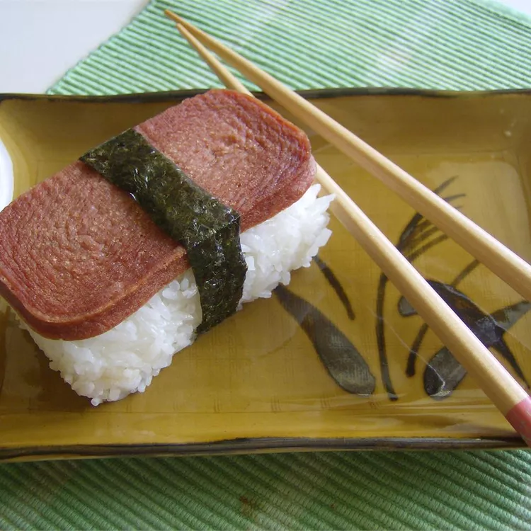

Spam Musubi Recipe

Description
Need a quick bite but something that still tastes good? Try making some spam musubi! Has an amazing
flavor and very filling.
Ingredients
- 2 cups uncooked short-grain white rice
- 2 cups water
- 6 tablespoons rice vinegar
- ½ cup white sugar
- ¼ cup soy sauce
- ¼ cup oyster sauce
- 1 container of fully cooked spam
- 2 tablespoons vegetable oil
- 5 sheets sushi nori
Steps
- Soak uncooked rice in water to cover for 4 hours; drain and rinse.
- Bring 2 cups water to a boil in a medium saucepan. Add rice and stir. Reduce heat, cover, and simmer for 20 minutes.
- Remove pan from heat and stir in rice vinegar. Set aside to cool.
- Stir together sugar, soy sauce, and oyster sauce in a medium bowl until sugar is completely dissolved. Slice luncheon
meat lengthwise into 10 slices, or to desired thickness, and marinate in sauce for 5 minutes.
- Heat oil in a large skillet over medium-high heat. Cook slices until lightly browned, about 2 minutes per side.
- Cut nori sheets in half and lay on a flat work surface. Place a rice press in the center of a sheet, and press rice tightly inside. Top
with a slice of luncheon meat, and remove press. Wrap nori around rice, sealing edges with a small amount of water.
(Rice may also be formed by hand in the shape of the meat slices and about 1-inch thick.)
- Serve musubi warm or chilled.